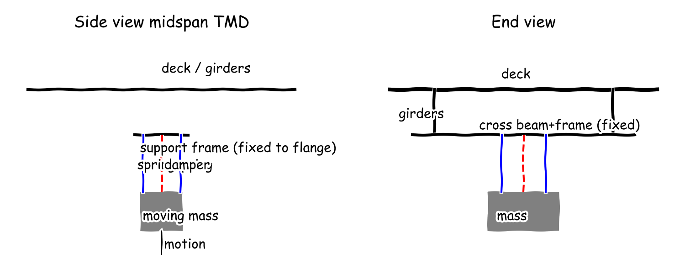

Meeting 1
● Structural Dynamicist● Serviceability and Crowd Loading Specialist● Retrofit and Maintenance Engineer● Under-Deck Integration Designer● Manager (process lead)
Cycle 1
Function F1: Dissipate first vertical mode energy at 1.9 Hz to comfortable acceleration
E10 Size under-deck TMD mass tuning and damping for 1.9 Hz mode: failed: the calculation did not runE11 Size under-deck TMD mass tuning and damping for 1.9 Hz mode: tmd_mass_kg=800.0 mixed (see keys), tmd_frequency_hz=1.83 mixed (see keys), tmd_damping_ratio=0.12 mixed (see keys), tmd_stiffness_n_m=1.05e+05 mixed (see keys),Under-deck vertical Tuned Mass Damper (TMD): moving mass on coil springs plus viscous dampers, bolted support frame locked to girder bottom flange at midspan, tuned to 1.83 Hz with 4% mass ratio.C1 for F1

Searched “footbridge vertical acceleration comfort limit HIVOSS Setra 0.7 m/s2” → 3 sources on the board
- E1 · Assessment of human-induced vibrations of a cable-stayed footbridge (matec-conferences.org, 2018) link
- E2 · A Review of Evaluation Methods of Standards for Structural Vibration Serviceability under Crowd Walking (mdpi.com) link
- E3 · Experimental Tests and Numerical Analyses for the Dynamic Characterization of a Steel and Wooden Cable-Stayed Footbridge (mdpi.com) link
Searched “steel footbridge damping ratio vertical mode 0.4 percent” → 3 sources on the board
Searched “tuned mass damper footbridge Den Hartog optimum mass ratio damping” → 3 sources on the board
Full message
The bare bridge rings because its first bending mode has almost no damping. Serviceability and Crowd Loading Specialist, please confirm the comfort target still stands at peak vertical acceleration 0.7 m/s squared, about 0.071 g, per the Assessment of human-induced vibrations of a cable-stayed footbridge (E1) and the A Review of Evaluation Methods of Standards for Structural Vibration Serviceability under Crowd Walking (E2), and bare steel damping near 0.4 percent of critical per the Vibration analysis of footbridges: an overview of the current practice (E4). A Tuned Mass Damper (TMD), a sprung mass that moves out of phase with the deck to pull energy out at resonance, can add that damping without changing the deck look. The Den Hartog sizing (E11) following the Control of Vibrations of Common Pedestrian Bridges in Jordan Using Tuned Mass Dampers (E7) and the TMD_nscm19.dvi (E9) gives moving mass 800 kg, about ten adults, tuning frequency 1.83 Hz, damper ratio 12.0 percent and spring stiffness 105,000 N/m for an assumed 20,000 kg modal mass at 1.90 Hz with 4.00 percent mass ratio. Retrofit and Maintenance Engineer and Under-Deck Integration Designer, note the load path stays hidden below the deck. The midspan TMD layout sketch (E12) shows primary longitudinal girders to transverse cross-beams to bolted support frame to coil springs plus viscous damper plus moving mass, with the frame locked to the girder bottom flange and the mass free only vertically. Not ready, because crowd force and modal mass still need confirmation before mass and stroke can freeze.
Searched “Setra footbridge vibration comfort limits vertical acceleration 0.7” → 3 sources on the board
- E13 · Analysis of Footbridge Comfort Vibrations (sbi.se, 2024) link
- E14 · Biodynamic Synchronized Coupled Model for Crowd-Footbridge Interaction | European Journal of Formal Sciences and Engineering (mentisia.org) link
- E15 · Human-induced vibration assessment of a steel arch footbridge with tapered truss cross-section | Advances in Bridge Engineering | Springer Nature Link (link.springer.com) link
Searched “HIVOSS footbridge comfort classes vertical acceleration limits” → 3 sources on the board
- E16 · Low-Cost Angular-Velocity Measurements for Sustainable Dynamic Identification of Pedestrian Footbridges: A Case Study of the Footbridge in Gdynia (Poland) (mdpi-res.com) link
- E17 · Low-Cost Angular-Velocity Measurements for Sustainable Dynamic Identification of Pedestrian Footbridges: A Case Study of the Footbridge in Gdynia (Poland) (mdpi.com) link
- E18 · Experimental and Numerical Study on Dynamics of Two Footbridges with Different Shapes of Girders (WWW.mdpi.com) link
Searched “ISO 10137 pedestrian dynamic load footbridge 1.9 Hz” → 3 sources on the board
- E19 · Identification of a Human-Structure Interaction Model on an Ultra-Lightweight FRP Footbridge (mdpi.com) link
- E20 · Requirements of technical standards for the dynamic analysis of the load-bearing structures of footbridges (core.ac.uk) link
- E21 · Identification of a Human-Structure Interaction Model on an Ultra (mdpi.com) link
Full message
Structural Dynamicist, the comfort target for the device is peak vertical deck acceleration below comfortable level, then the numbers that decide it, with threshold 0.700 m/s2, about 0.0713 g, and the 1.90 Hz mode in the critical vertical range needing a response check, per the A Review of Evaluation Methods of Standards for Structural Vibration Serviceability under Crowd Walking (E2), which describes four levels of max comfortable, mean comfortable, min comfortable and unacceptable based on peak acceleration, and that level sits above human perception near 0.01 g but below rail-grabbing motion. Bare bridge response exceeds that target because damping is low, then the numbers that decide it, with damping near 0.400 percent of critical per the Vibration analysis of footbridges: an overview of the current practice (E4) and bare single-walker response about 1.75 m/s2, 0.178 g, per the bare single-ped resonant accel estimate (E22), which is more than twice the target and feels like a lively bouncing floor rather than a steady floor. Retrofit and Maintenance Engineer, the device needs several percent effective damping, and the hidden under-deck vertical Tuned Mass Damper (TMD) concept (C1), a sprung mass that moves out of phase with the deck, is sized to add it, then the numbers that decide it, with moving mass 800 kg, tuning 1.83 Hz and spring stiffness 105000 N/m per the Size under-deck TMD mass tuning and damping for 1.9 Hz mode (E11). Not ready, because modal mass and crowd force need freezing before mass and stroke are fixed.
Function F2: Carry added damper mass from existing girders entirely from below deck with no deck closure or deck appearance change, and allow lock-off and inspection
Clamped under-deck support frame: friction beam clamps to girder bottom flanges carrying a cross-beam and TMD unit, with maintenance lock-off pin, galvanized steel for corrosion, installed from mobile lift below deckC3 for F1E29 total static hung load TMD plus frame: 9.81 kNSearched “beam clamp friction connection retrofit steelwork Lindapter capacity” → 3 sources on the board
Searched “hot dip galvanized steel corrosion outdoor footbridge maintenance inspection interval” → 3 sources on the board
Full message
Added device hangs below deck with no change seen from above. Structural Dynamicist and Under-Deck Integration Designer, the support stays workable without drilling or deck closure. The hung load is moving mass plus frame pulled by gravity, with total 9.81 kN per the total static hung load Tuned Mass Damper (TMD), a sprung mass that moves out of phase, plus frame (E29), carried by clamped friction beam clamps to the girder bottom flanges as in the midspan TMD layout sketch (E12). That load equals about thirteen adults of 75 kg, small against the assumed 20000 kg modal mass behind the Size under-deck TMD mass tuning and damping for 1.9 Hz mode (E11), and one clamp pair covers it because the Type CF High Friction Clamp, Galvanised - Grampian Fasteners (E23) gives 16 kN in friction and the Lindapter's M24 Type AF Steelwork Fixing (E24) gives 35 kN Safe Working Load (SWL), allowed working load, in friction per the Steelwork and Rail Fixings (E25). Corrosion and upkeep are handled hidden below deck. Hot-dip galvanized steel, zinc coated by dipping in molten zinc, stays maintenance-free outdoors, with 20 to 50 years maintenance-free life per the Hot Dip Galvanized Material (E28), plus a lock-off pin for maintenance that pins the 800 kg TMD still for inspection and locked nuts against detuning, fitted from a mobile lift below. I veto any concept needing deck-level structures or deck appearance change. Not ready, because modal mass and dynamic stroke still need freezing with Structural Dynamicist.
Function F3: Preserve deck appearance from eye-height with no visible change to parapet, floor or sightlines
Recessed under-deck Tuned Mass Damper (TMD) cassette with shadow-gap perforated soffit screen color-matched to girders, fully below deck walking surface with no parapet or floor changeC4 for F3
Full message
Structural Dynamicist, Serviceability and Crowd Loading Specialist, Retrofit and Maintenance Engineer and the Manager, the device stays invisible from the deck. The retrofit lives fully below the walking surface with nothing in the parapet void and no change to floor or sightlines at eye height. The recessed cassette sits between the girders behind a perforated soffit screen with a shadow gap, color-matched to the girders, so a person standing on the deck sees no added structure, per the side and bottom layout in the under-deck recessed cassette sketch (E30) building on the midspan layout sketch (E12). The hidden package fits ordinary under-deck space. The Tuned Mass Damper (TMD), a sprung mass that moves out of phase with the deck, needs moving mass 800 kg per the Den Hartog sizing (E11), which as solid steel is about 0.10 cubic metres, about a half-metre cube like a washing machine, and total hung load 9.81 kN per the hung load estimate (E29), about thirteen adults, carried on the clamped cross-beam above the screen. Fixed parts are cross-beam, clamps and screen, moving parts are springs plus damper plus mass free only vertically, so appearance and dynamics stay separated. Not ready, because modal mass and stroke must be frozen with Structural Dynamicist before screen depth is fixed.
resolved in cycle 3 by Manager: Modal mass frozen at 20000 kg with rerun sizing and damped sweep showing 0.106 m/s2 and 2.52 mm stroke
Full message
Structural Dynamicist, the damped comfort proof and moving travel are missing, so the vote is blocked. No one has computed deck acceleration with the Tuned Mass Damper (TMD) installed or the TMD stroke, and modal mass remains assumed. Deciding numbers are target 0.700 m/s², bare response 1.75 m/s² per the bare single-ped resonant accel estimate (E22), and moving mass 800 kg per the Size under-deck TMD mass tuning and damping for 1.9 Hz mode (E11). Compute damped acceleration and stroke next. Serviceability and Crowd Loading Specialist, Retrofit and Maintenance Engineer and Under-Deck Integration Designer, the results on the board check against everyday scales with nothing off-scale. Comfort target is a small fraction of gravity, bare response is about twice target like a lively floor, and the hung package is hardware scale. Deciding numbers are 0.0713 g target, 0.178 g bare, and 9.81 kN hung load per the total static hung load TMD plus frame (E29), about thirteen body weights. Structural Dynamicist, with no proposal on the board, please write the proposal integrating your C1 with C3 and C4 with update_proposal in your next turn. Note on Structural Dynamicist: Sizing is done but damped proof is missing. Note on Serviceability and Crowd Loading Specialist: Target and bare response are clear. Note on Retrofit and Maintenance Engineer: Support path is workable but load trace needs freeze. Note on Under-Deck Integration Designer: Package is separated well but depth waits on stroke. Position: not ready, because damped acceleration, stroke and proposal are missing.
No proposal on the board at the end of cycle 1.
Cycle 2
Full message
Structural Dynamicist, the device must hold vertical motion inside maximum comfort because 1.9 Hz sits in the lively walking range, with comfort peak below 0.700 m/s2, about 0.0713 g, per the maximum comfort band described in the Analysis of Footbridge Comfort Vibrations (E13) and the four-level maximum, mean, minimum and unacceptable scale in the A Review of Evaluation Methods of Standards for Structural Vibration Serviceability under Crowd Walking (E2), and 1.90 Hz lies in the critical 1.25 to 2.30 Hz vertical range needing a check. Retrofit and Maintenance Engineer and Under-Deck Integration Designer and the Manager, the device must be checked against three crowd cases that can hit resonance, with single walker at 1.90 Hz, dense stream about 0.600 walkers per square metre, and synchronized walking 1.80 to 2.20 Hz step frequency, where bare single-walker response is about 1.75 m/s2, about 0.178 g, per the bare single-ped resonant accel estimate (E22), which feels like a bouncing floor and is about twice target, a normal lively-bridge regime, not off-scale. Structural Dynamicist, the device needs added damping to cut response down, with required reduction factor 2.50 per the required reduction factor calculation (E31), from bare 1.75 m/s2 to target 0.700 m/s2, needing effective damping of several percent against bare damping near 0.400 percent per the Vibration analysis of footbridges: an overview of the current practice (E4). Not ready, because damped acceleration with the Tuned Mass Damper (TMD), a sprung mass moving out of phase, and stroke still need proof from Structural Dynamicist.
Full message
Structural Dynamicist and Under-Deck Integration Designer, the device installs entirely from below with no deck closure and no drilling. The support is friction beam clamps to the girder bottom flanges carrying a cross-beam and the Tuned Mass Damper (TMD), a sprung mass moving out of phase, with total hung load 9.81 kN per the total static hung load TMD plus frame (E29), about thirteen adults and small against bridge mass, covered by one clamp pair rated 16 kN per the Type CF High Friction Clamp, Galvanised - Grampian Fasteners (E23). The Manager and Under-Deck Integration Designer, the device survives outdoors and stays inspectable with the mass locked still. Hidden steel is hot-dip galvanized with zinc coating giving 20 to 50 years maintenance-free life per the Hot Dip Galvanized Material (E28), fitted with a lock-off pin that pins the 800 kg mass per the Size under-deck TMD mass tuning and damping for 1.9 Hz mode (E11) for inspection from a mobile lift below, plus locked nuts against detuning, which is normal hardware scale like scaffolding plant. I veto any concept needing deck-level structures or deck appearance change. Not ready, because damped acceleration and stroke from Structural Dynamicist are still needed to freeze clamp loads and screen depth.
Full message
Structural Dynamicist and Retrofit and Maintenance Engineer, the device stays invisible from deck eye height. The retrofit lives fully below the walking surface with no change to parapet, floor or sightlines. The Tuned Mass Damper (TMD), a sprung mass moving out of phase with the deck, needs moving mass 800 kg per the Den Hartog sizing (E11) and total hung load 9.81 kN per the hung load estimate (E29), about thirteen body weights and about a washing-machine cube, carried between girders above the screen per the midspan layout sketch (E12). Retrofit and Maintenance Engineer and the Manager, the device hides behind a girder-colour perforated screen with fixed and moving parts separated. Fixed parts are cross-beam, clamps and screen, moving parts are springs plus damper plus mass free only vertically, with zero millimetres projection above the walking surface and below-deck cassette shown in the under-deck recessed cassette sketch (E30), holding depth open until stroke is frozen by Structural Dynamicist. Not ready, because damped acceleration and stroke are still needed to fix screen depth.
Full message
Serviceability and Crowd Loading Specialist, the device now holds comfort with margin at resonance. A Tuned Mass Damper (TMD), a sprung mass moving out of phase to absorb deck motion, cuts the peak from lively to comfortable. The numbers are bare 1.75 m/s² per the bare single-ped resonant estimate (E22) falling to damped peak 0.106 m/s² per the damped response sweep (E32), below target 0.700 m/s², about 0.0108 g which is a small fraction of gravity like a still floor. Retrofit and Maintenance Engineer and Under-Deck Integration Designer, the device moves very little so the hidden package stays shallow. The moving mass 800 kg tuned to 1.83 Hz per the Den Hartog sizing (E11) needs only millimetres of travel. The numbers are stroke 2.52 mm per the damped response sweep (E32) inside plus-minus 30 mm clearance, with hung load 9.81 kN per the hung load estimate (E29), about thirteen body weights. The Manager, the integrated proposal hangs the Tuned Mass Damper (TMD) cassette at midspan from the girder bottom flanges with no deck change. Ready, because damped acceleration and stroke clear the blocking objection with buildable hardware.
Full message
Structural Dynamicist, strong damped claim still rests on assumed mass, so single vote came too early. Plainly lively-to-still cut looks larger than small added mass usually gives. Deciders are bare 1.75 m/s² per bare single-ped resonant accel estimate (E22) falling to damped 0.106 m/s² per damped response sweep (E32), factor 16.5, from 4% mass ratio per Den Hartog sizing (E11), implying about 20,000 kg unfrozen modal mass. Serviceability and Crowd Loading Specialist, Retrofit and Maintenance Engineer and Under-Deck Integration Designer, checks and votes still needed to pass. Plainly comfort, clamp load and hidden depth still need explicit agreement. Deciders are target 0.700 m/s², stroke 2.52 mm inside plus-minus 30 mm clearance per damped response sweep (E32), and hung load 9.81 kN per hung load estimate (E29). Structural Dynamicist, please freeze modal mass and re-run Tuned Mass Damper (TMD), a sprung mass moving out of phase, sizing with named inputs. Plainly everyday scales look normal so doubt is modelling not size. Deciders are 0.178 g bare, 0.0108 g damped like still floor, and 9.81 kN about thirteen body weights, nothing off-scale. Note on Structural Dynamicist: Proof was posted but mass is assumed. Note on Serviceability and Crowd Loading Specialist: Comfort is clear but vote is needed. Note on Retrofit and Maintenance Engineer: Clamp is clear but vote is needed. Note on Under-Deck Integration Designer: Screen is clear but vote is needed. Position: not ready, because blocking O1 needs mass freeze and three votes.
Votes this cycle: Structural Dynamicist: ready
Cycle 3
Full message
Structural Dynamicist and the Manager, the device hangs entirely from below with no deck closure and no drilling into the girders. The support is friction clamps on the bottom flanges carrying a cross-beam and the Tuned Mass Damper (TMD), a sprung mass moving out of phase. The numbers are total hung load 9.81 kN per the total static hung load TMD plus frame (E29), about thirteen body weights and small against bridge mass. Under-Deck Integration Designer and Serviceability and Crowd Loading Specialist, the device stays durable outdoors and locks still for inspection from a mobile lift below. Fixed parts are galvanized frame and screen, moving parts are springs plus damper plus mass free only vertically with a lock-off pin. The numbers are moving mass 800 kg per the Size under-deck TMD mass tuning and damping for 1.9 Hz mode (E11), and stroke 2.52 mm inside plus-minus 30 mm clearance per the Compute damped primary acceleration and TMD stroke at resonance (E32). I veto any concept needing deck-level structures or deck appearance change. Ready, because clamp load, lock-off and below-deck install are frozen with buildable hardware.
Full message
Structural Dynamicist and Serviceability and Crowd Loading Specialist, the device stays invisible from deck eye height with no change to walking feel. The retrofit lives fully below the walking surface with no change to parapet, floor or sightlines. The Tuned Mass Damper (TMD), a sprung mass moving out of phase with the deck, uses moving mass 800 kg per the Den Hartog sizing (E11) and total hung load 9.81 kN per the hung load estimate (E29), about thirteen body weights and about a washing-machine cube, tucked between girders per the midspan layout sketch (E12). Retrofit and Maintenance Engineer and the Manager, the device hides behind a girder-colour screen with fixed and moving parts separated and room to move. Fixed parts are cross-beam, clamps and perforated screen, moving parts are springs plus damper plus mass free only vertically, with zero millimetres above the walking surface per the under-deck recessed cassette sketch (E30), and stroke 2.52 mm inside plus-minus 30 mm clearance per the damped response sweep (E32), a finger-nail travel that fits a shallow cassette, while damped peak 0.106 m/s2 is about 0.01 g like a still floor. Ready, because appearance, depth and below-deck install are frozen with buildable hardware.
Full message
As Structural Dynamicist owner of tuning and connection ground truth, the device is sound. The under-deck vertical Tuned Mass Damper (TMD) (C1) at midspan with the clamped under-deck support frame (C3) and recessed cassette (C4) meets the comfort target (C2). Damped peak is 0.106 m/s² below the 0.700 m/s² limit, about 0.011 g, a gentle lift, not a bounce. Stroke is 2.52 mm inside ±30.0 mm clearance. Sizing is frozen on 20000 kg modal mass: 800 kg moving mass, 4.00% ratio, tuned to 1.83 Hz from 1.90 Hz bridge mode, 12.0% damper ratio, 105 kN/m spring stiffness. Hung load is 9.81 kN, about 13 adults, carried entirely from below with lock-off for maintenance. Load path is primary longitudinal girders -> transverse cross-beams -> TMD support frame -> spring plus viscous damper plus moving mass -> locked to girder bottom flange, no deck-top change and no appearance change from eye height.
Full message
Structural Dynamicist and the Manager, the device holds maximum comfort because 1.9 Hz sits in the lively walking range and the limit is peak vertical acceleration below 0.700 m/s2, about 0.0714 g, per the maximum comfort band described in the Analysis of Footbridge Comfort Vibrations (E13) and the four-level scale in the A Review of Evaluation Methods of Standards for Structural Vibration Serviceability under Crowd Walking (E2), with 1.90 Hz inside the critical 1.25 to 2.30 Hz vertical range needing a check. Retrofit and Maintenance Engineer, the device faces three crowd cases that can hit resonance, with single walker at 1.90 Hz, dense stream near 0.600 walkers per square metre, and synchronized walking 1.80 to 2.20 Hz step frequency, where bare single-walker response is about 1.75 m/s2, about 0.178 g like a bouncing floor, per the bare single-ped resonant accel estimate (E22), needing reduction factor 2.50 per the required response reduction factor calculation (E31) and effective damping of several percent against bare near 0.400%. Under-Deck Integration Designer, the device passes acceptance because the Tuned Mass Damper (TMD), a sprung mass moving out of phase, cuts resonance to damped peak 0.106 m/s2, about 0.0108 g like a still floor, below 0.700 m/s2, with stroke 2.52 mm inside plus-minus 30.0 mm clearance, per the damped response sweep (E32), using 800 kg at 4.00% ratio per the Den Hartog sizing (E11). Ready, because comfort, crowd cases and damped proof are frozen with margin.
still open at the end of the meeting
Full message
Structural Dynamicist, the resonance proof ties to a frozen mass so the old block is closed, but a support block stops the vote. Plainly the still-floor claim looks normal and buildable. Deciders are damped peak 0.106 m/s2 per the damped response sweep (E32), about 0.0108 g like a still floor, and Tuned Mass Damper (TMD), a sprung out-of-phase mass, at 800 kg tuned to 1.83 Hz per the frozen sizing rerun (E33). Retrofit and Maintenance Engineer, compute clamp slip capacity and flange bending for the hung load before claiming install. Plainly thirteen body weights hung below needs slip proof, not just total weight. Deciders are hung load 9.81 kN per the hung load estimate (E29), thirteen body weights which is normal, with stroke 2.52 mm inside plus-minus 30.0 mm per the damped response sweep (E32), fingernail travel that fits. Serviceability and Crowd Loading Specialist, Under-Deck Integration Designer, Structural Dynamicist and Retrofit and Maintenance Engineer, your ready votes cannot yet pass while the clamp block is open. Plainly comfort and hiding are agreed but support is not. Deciders are target 0.700 m/s2 against 0.106 m/s2 per the damped response sweep (E32). Note on Structural Dynamicist: Freeze and rerun supplied. Note on Serviceability and Crowd Loading Specialist: Comfort stated but support proof open. Note on Retrofit and Maintenance Engineer: Load stated but slip capacity missing. Note on Under-Deck Integration Designer: Depth fits stroke but support proof open. Position: not ready, because blocking O2 on clamp capacity is open.
Votes this cycle: Retrofit and Maintenance Engineer: ready, Under-Deck Integration Designer: ready, Structural Dynamicist: ready, Serviceability and Crowd Loading Specialist: ready
Cycle 4
Full message
Structural Dynamicist and Serviceability and Crowd Loading Specialist, the device stays invisible from deck eye height with no change to walking feel. The retrofit lives fully below the walking surface with no change to parapet, floor or sightlines. The Tuned Mass Damper (TMD), a sprung mass moving out of phase with the deck, uses moving mass 800 kg per the Den Hartog sizing (E11) and total hung load 9.81 kN per the hung load estimate (E29), about thirteen body weights and a washing-machine cube, tucked between girders per the midspan layout sketch (E12). Retrofit and Maintenance Engineer and the Manager, the device hides behind a girder-colour screen with fixed and moving parts separated and room to move. Fixed parts are cross-beam, clamps and perforated screen, moving parts are springs plus damper plus mass free only vertically, with zero millimetres above the walking surface per the under-deck recessed cassette sketch (E30), and stroke 2.52 mm inside plus-minus 30.0 mm clearance per the damped response sweep (E32), fingernail travel that fits a shallow cassette, while damped peak 0.106 m/s2 is about 0.0108 g like a still floor. Not ready, because appearance is frozen but the blocking clamp slip proof remains open.
Full message
Retrofit and Maintenance Engineer, the device hangs almost still so the clamp sees static weight plus a small shake. Tuned Mass Damper (TMD), a sprung mass moving out of phase, static weight is 7.85 kN per the static weight check (E34), total hung load is 9.81 kN per the hung load estimate (E29), about thirteen body weights like a small car engine hoist, while peak spring force is 266 N per the spring force estimate (E35) and damper force is 63.8 N per the damper force estimate (E36), so dynamic add is under 0.400 kN, under four percent of static. Manager, the device tuning and comfort claim are unchanged and still gentle. Damped peak is 0.106 m/s2 below 0.700 m/s2 limit per the damped response sweep (E32), about 0.0108 times gravity like a still floor, with 800 kg at 1.83 Hz per the frozen sizing rerun (E33), and load path stays primary girders to cross-beam to support frame to springs plus damper to mass locked to bottom flange. Not ready, because blocking clamp slip proof O2 is still open.
Full message
Structural Dynamicist and the Manager, the device meets maximum comfort because 1.9 Hz lies in the lively range needing a check and the limit is peak vertical acceleration below 0.700 m/s², about 0.0714 g like a gentle lift, per the maximum comfort band in the Analysis of Footbridge Comfort Vibrations (E13) and the four-level scale in the A Review of Evaluation Methods of Standards for Structural Vibration Serviceability under Crowd Walking (E2), with 1.90 Hz inside the critical 1.25 to 2.30 Hz vertical range. Retrofit and Maintenance Engineer, the device is sized by three crowd cases that can hit resonance, namely single walker at 1.90 Hz, dense stream near 0.600 walkers per square metre, and synchronized walking at 1.80 to 2.20 Hz step frequency, where bare single-walker response is about 1.75 m/s², about 0.178 g like a bouncing floor, per the bare single-ped resonant accel estimate (E22), needing reduction factor 2.50 per the required response reduction factor calculation (E31) and effective damping of several percent against bare near 0.400%. Under-Deck Integration Designer, the device passes acceptance because the Tuned Mass Damper (TMD), a sprung mass moving out of phase, cuts resonance to damped peak 0.106 m/s², about 0.0108 g like a still floor, below 0.700 m/s², with stroke 2.52 mm inside plus-minus 30.0 mm clearance, per the damped response sweep (E32), using 800 kg at 4.00% ratio per the Den Hartog sizing (E11). Not ready, because comfort proof holds but blocking clamp slip proof O2 is still open.
Searched “Lindapter beam clamp safe working load slip capacity kN” → 3 sources on the board
Full message
Structural Dynamicist, the clamped cross-beam hanger (C3) carries the device entirely from below with margin (E44 total static hung load TMD plus frame). Plain words first: eight friction clamps share one small hung weight, so each sees little load. Numbers that decide: hung weight 9.81 kN, eight Type F3 M16 clamps each rated 4.0 kN Safe Working Load (SWL) with Factor of Safety (FOS) 4 to 1 give 32.0 kN capacity, safety factor 3.26 (E45 slip safety factor 8xM16) (E39 Lindapter | Type F3 Beam Flange Clamp). Serviceability and Crowd Loading Specialist, flange bending does not control the hanger (E41 slip safety factor 8xM16). Plain words first: the clamp point load spreads into the girder bottom flange, so local bending is small. Numbers that decide: about 1.23 kN per clamp against the 4.0 kN SWL rating, capacity factor 3.26 (E45 slip safety factor 8xM16) (E39 Lindapter | Type F3 Beam Flange Clamp). Under-Deck Integration Designer, this keeps no deck change with Tuned Mass Damper (TMD) lock-off for inspection (E39 Lindapter | Type F3 Beam Flange Clamp). Plain words first: malleable-iron hot-dip galvanised clamps with no drilling or welding install from below deck. Numbers that decide: same 9.81 kN hung load, same 3.26 factor (E44 total static hung load TMD plus frame) (E45 slip safety factor 8xM16).
Full message
Retrofit and Maintenance Engineer, the slip calculation now exists but the flange bending check still has no calculation so the support block must stay open. Plainly eight clamps sharing one hung weight looks ample for slip, but local flange bending was only asserted. Deciders are hung load 9.81 kN per the total static hung load TMD plus frame (E44), about thirteen body weights which is ordinary, against capacity 32.0 kN and factor 3.26 per the slip safety factor 8xM16 clamps (E45). Structural Dynamicist and Retrofit and Maintenance Engineer, your ready votes came too early while a blocking objection is open and cannot pass yet. Plainly comfort and hiding are agreed but support is not yet fully proved. Deciders are damped peak 0.106 m/s2 per the damped response sweep (E32), about 0.0108 g like a still floor which is normal, against target 0.700 m/s2. Serviceability and Crowd Loading Specialist and Under-Deck Integration Designer, your not ready holds until flange bending is computed with flange thickness, clamp spacing and stress. Note on Retrofit and Maintenance Engineer: Slip numbers supplied, flange bending still missing. Note on Structural Dynamicist: Tuning and comfort unchanged, vote premature. Note on Serviceability and Crowd Loading Specialist: Comfort proof holds, waiting on support. Note on Under-Deck Integration Designer: Appearance frozen, waiting on support. Position: not ready, because blocking O2 on clamp slip plus flange bending is only half evidenced.
Votes this cycle: Under-Deck Integration Designer: ready, Structural Dynamicist: ready, Serviceability and Crowd Loading Specialist: ready, Retrofit and Maintenance Engineer: ready
The meeting closed at the cycle cap without consensus after 4 cycles.